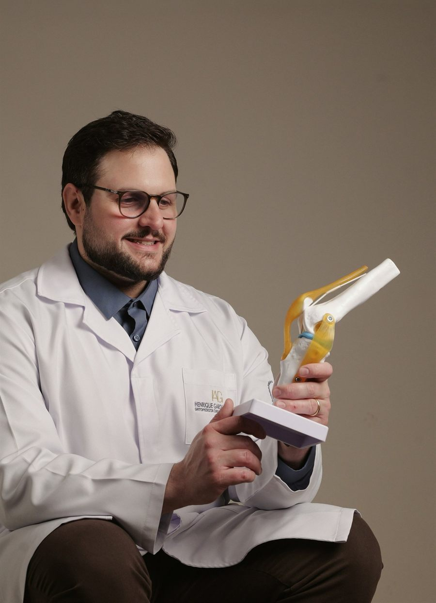
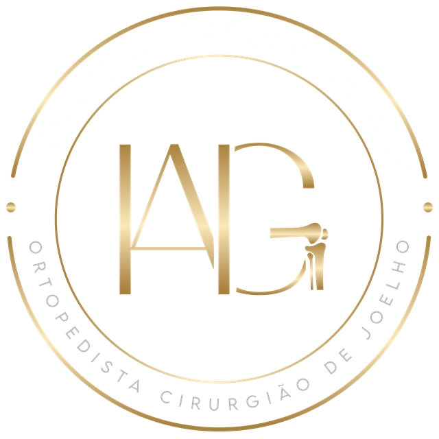
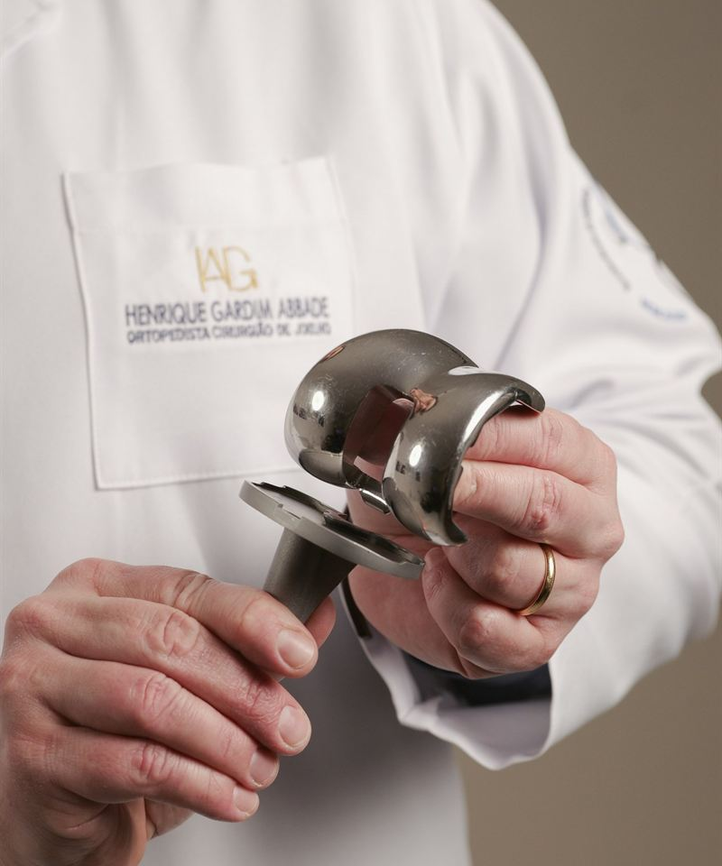
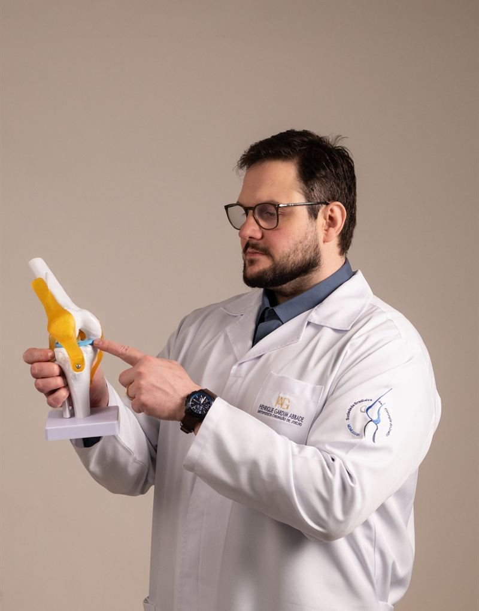

Atendimento personalizado
Cada paciente tem uma história, uma rotina e um objetivo. A consulta é dedicada a entender você, e não apenas o exame.
Unindo conhecimento, precisão e cuidado individualizado para preservar a saúde dos seus joelhos e proporcionar mais mobilidade e qualidade de vida.
O joelho é uma das articulações mais exigidas do corpo. Um olhar especializado faz diferença em cada etapa do cuidado.
Cada paciente tem uma história, uma rotina e um objetivo. A consulta é dedicada a entender você, e não apenas o exame.
Avaliação clínica detalhada e exames direcionados para identificar a real causa da dor ou da limitação.
Fisioterapia, fortalecimento, medicação e infiltrações são considerados antes de qualquer indicação cirúrgica.
Quando a cirurgia é o melhor caminho, você conta com um cirurgião com subespecialização em joelho e trauma esportivo.
Você entende seu diagnóstico, suas opções e o que esperar do tratamento, sem termos complicados.
Consultórios no Centro, no Itacorubi e no Campeche, no Sul da Ilha, para facilitar o seu acesso.

Ortopedista e Traumatologista • Especialista em Cirurgia do Joelho
Sou ortopedista e cirurgião de joelho e atendo pacientes em Florianópolis e região. Minha missão é ajudar cada pessoa a recuperar a mobilidade e a qualidade de vida, com um atendimento próximo, humano e baseado nas melhores evidências.
Acredito que o paciente bem informado faz escolhas melhores. Por isso, dedico tempo a explicar cada diagnóstico e a construir, junto com você, o plano de tratamento mais adequado ao seu momento de vida, seja voltar ao esporte, trabalhar sem dor ou simplesmente caminhar com mais tranquilidade.

Conheça as principais condições do joelho que avalio e trato no consultório. Clique em cada uma para saber mais sobre sintomas e opções de tratamento.

Desgaste da cartilagem que causa dor, rigidez e perda de mobilidade. O tratamento vai de medidas conservadoras até a prótese de joelho, quando indicada.
Dor que piora ao caminhar, subir escadas ou levantar da cadeira, rigidez ao acordar ou após ficar parado, inchaço e, com o tempo, deformidade e perda de movimento.
Controle de peso, fortalecimento muscular, fisioterapia, medicação e infiltrações. Nos casos avançados, quando a dor limita a rotina, a prótese de joelho pode ser indicada.
Comuns no esporte, especialmente em movimentos de torção. Podem gerar instabilidade e exigir reconstrução ligamentar.
Estalo no momento da lesão, inchaço nas primeiras horas, dor e sensação de que o joelho "falseia" ou sai do lugar ao girar o corpo.
Depende do ligamento, do grau da lesão e dos objetivos do paciente. Pode envolver reabilitação e fortalecimento ou reconstrução ligamentar por artroscopia, com foco no retorno seguro ao esporte.
Provocam dor, inchaço e travamento do joelho. Em muitos casos, é possível preservar o menisco com o tratamento adequado.
Dor na lateral ou na parte interna do joelho, inchaço, estalos com dor, dificuldade para agachar e episódios de travamento.
Fisioterapia e fortalecimento em lesões estáveis. Quando necessária, a artroscopia busca reparar (suturar) o menisco sempre que possível, preservando a articulação.
Danos na superfície da articulação que podem evoluir se não tratados. Existem técnicas específicas para cada tipo de lesão.
Dor ao fazer esforço, inchaço recorrente após atividade física, estalos e, às vezes, sensação de bloqueio do movimento.
Varia conforme o tamanho e a localização da lesão: reabilitação, infiltrações ou técnicas cirúrgicas de reparo e regeneração da cartilagem.
Dor na parte da frente do joelho, frequente em quem sobe escadas, agacha ou pratica corrida.
Dor ao redor ou atrás da patela, que piora ao subir e descer escadas, agachar ou ficar muito tempo sentado com o joelho dobrado.
Na grande maioria dos casos é conservador: fortalecimento do quadril e da coxa, ajuste de carga nos treinos e fisioterapia direcionada.
Sensação de que a patela (rótula) "sai do lugar". O tratamento busca devolver estabilidade e segurança ao movimento.
Episódios de luxação ou subluxação da patela, insegurança ao girar ou mudar de direção, dor e inchaço após os episódios.
Reabilitação e fortalecimento após o primeiro episódio. Em casos recorrentes, a cirurgia pode reconstruir os estabilizadores da patela.
Traumas que atingem fêmur, tíbia ou patela e exigem avaliação especializada para uma recuperação adequada.
Dor intensa após queda ou trauma, inchaço importante, dificuldade ou impossibilidade de apoiar o peso na perna.
Pode ser feito com imobilização ou com cirurgia para alinhar e fixar a fratura, seguido de reabilitação para recuperar movimento e força.
Indicada em casos avançados de desgaste, com o objetivo de reduzir a dor e devolver a função da articulação.
Quando a artrose está avançada e a dor e a limitação persistem mesmo após o tratamento conservador, comprometendo a qualidade de vida.
A cirurgia substitui as superfícies desgastadas da articulação. Com a reabilitação, o objetivo é caminhar com menos dor e retomar as atividades do dia a dia.
E muitas outras condições do joelho. Não encontrou o seu caso? Agende uma avaliação.
Agendar avaliaçãoAtendo pacientes a partir dos 16 anos, dos atletas aos que buscam mais qualidade de vida na maturidade.

Lesões ligamentares, de menisco e de cartilagem, com foco no retorno seguro à atividade.
Dores, sobrecargas e lesões que atrapalham o trabalho e a rotina.
Artrose e casos avançados que podem ter indicação de prótese.
A confiança de quem já passou pelo consultório é o maior reconhecimento do meu trabalho.
Dê o primeiro passo para voltar a se movimentar sem dor.
Escolha o endereço mais conveniente para você e agende sua avaliação.